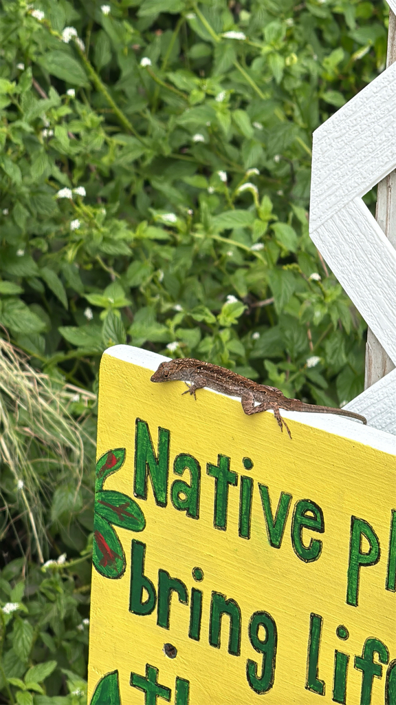

- If you see a small brown lizard doing push-ups on a fence post or flashing a reddish-orange throat fan, that is a brown anole — almost certainly the most common lizard you will meet anywhere in Florida.
- It is not from here. Brown anoles arrived from Cuba and the Bahamas in the late 1800s and have since spread into nearly every county in the state.
- Their success came at a cost to Florida's native green anole, which now spends more time high in the trees to stay out of the newcomer's way.
- Males stake out territory with a stretchy throat flap called a dewlap and a bobbing push-up display — body language that says this spot is taken.
Shades of brown, tan, or gray, often with a pattern of triangles, diamonds, or a light stripe down the back. Unlike the green anole, it cannot turn green.
Males flash a reddish-orange dewlap edged in yellow during displays.
Stocky, with a fairly short pointed snout and ridged (keeled) scales that give the back a slightly rough look.
Usually seen low down — on the ground, fences, walls, and the base of trees — doing push-up displays.
Essentially silent. Anoles communicate with body language — push-ups and the colorful dewlap — rather than sound.
A small brown lizard perched head-down on a post or trunk, bobbing up and down. If it flashes an orange throat fan, it is a displaying male. The one thing it will never do is turn bright green — that is the native green anole, which tends to stay higher up.
Insects and other small invertebrates — beetles, ants, flies, spiders, and just about anything it can catch and fit in its mouth. It will also eat the eggs and young of other lizards, including the native green anole.
Almost everywhere on warm days — fence rails, tree trunks, sidewalk edges, and sunny garden borders. Watch low surfaces for a brown lizard doing push-ups.
Year-round resident. Most active and visible on warm, sunny days; scarce during cold snaps.
Just watch and enjoy. No need to feed or handle them — they are doing fine on their own.


- © Cole Guyton (CC-BY-NC), via iNaturalist
- © Harrison Mello (CC-BY-NC), via iNaturalist
- © David Vanderbilt (CC-BY-NC), via iNaturalist
- © Yavid Justiniano (CC-BY-NC), via iNaturalist
- © Denise Sosa (CC-BY-NC), via iNaturalist